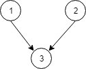

Topological Sorting
Links:
Problem description
Course Schedule
There are a total of n courses you have to take, labeled from 0 to n-1.
Some courses may have prerequisites, for example to take course 0 you have to first take course 1, which is expressed as a pair: [0,1]
Given the total number of courses and a list of prerequisite pairs, is it possible for you to finish all courses?
Example 1:
Input: 2, [[1,0]]
Output: true
Explanation: There are a total of 2 courses to take.
To take course 1 you should have finished course 0. So it is possible.
Example 2:
Input: 2, [[1,0],[0,1]]
Output: false
Explanation: There are a total of 2 courses to take.
To take course 1 you should have finished course 0, and to take course 0 you should
also have finished course 1. So it is impossible.
Note:
- The input prerequisites is a graph represented by a list of edges, not adjacency matrices. Read more about how a graph is represented.
- You may assume that there are no duplicate edges in the input prerequisites.
Course Schedule II
There are a total of n courses you have to take, labeled from 0 to n-1.
Some courses may have prerequisites, for example to take course 0 you have to first take course 1, which is expressed as a pair: [0,1]
Given the total number of courses and a list of prerequisite pairs, return the ordering of courses you should take to finish all courses.
There may be multiple correct orders, you just need to return one of them. If it is impossible to finish all courses, return an empty array.
Example 1:
Input: 2, [[1,0]]
Output: [0,1]
Explanation: There are a total of 2 courses to take. To take course 1 you should have finished
course 0. So the correct course order is [0,1] .
Example 2:
Input: 4, [[1,0],[2,0],[3,1],[3,2]]
Output: [0,1,2,3] or [0,2,1,3]
Explanation: There are a total of 4 courses to take. To take course 3 you should have finished both
courses 1 and 2. Both courses 1 and 2 should be taken after you finished course 0.
So one correct course order is [0,1,2,3]. Another correct ordering is [0,2,1,3] .
Note:
- The input prerequisites is a graph represented by a list of edges, not adjacency matrices. Read more about how a graph is represented.
You may assume that there are no duplicate edges in the input prerequisites.
Parallel Courses
There are N courses, labelled from 1 to N.
We are given relations[i] = [X, Y], representing a prerequisite relationship between course X and course Y: course X has to be studied before course Y.
In one semester you can study any number of courses as long as you have studied all the prerequisites for the course you are studying.
Return the minimum number of semesters needed to study all courses. If there is no way to study all the courses, return -1.
Example 1:

Input: N = 3, relations = [[1,3],[2,3]]
Output: 2
Explanation:
In the first semester, courses 1 and 2 are studied. In the second semester, course 3 is studied.
Example 2:

Input: N = 3, relations = [[1,2],[2,3],[3,1]]
Output: -1
Explanation:
No course can be studied because they depend on each other.
Note:
1 <= N <= 50001 <= relations.length <= 5000relations[i][0] != relations[i][1]- There are no repeated relations in the input.
Method
Course Schedule
Regard this course relation as an DAG (Directed Acyclic Graph), which implement Topological Sorting to solve the problem such as if a node is accessible from beginning or if all nodes are accessible.
The approach is that, regraded all course as a DAG and at least one node has no incoming edge (if not, then this graph is not a DAG). Nodes with 0 incoming edge has 0 indegree. Therefore, remove nodes with 0 indegree with its connection. After removing the nodes and connections if there is any nodes that becomes 0 indegree then add into a queue awaiting removing. Repeat this process, until the queue is empty. If the number of removing nodes are same as total nodes in graph, then all nodes are accessible.
Course Schedule II
The Course Schedule II only requires a slight modification on code of Course Schedule. Use a list to record all possible nodes during the topological sorting and finally return it.
Parallel Courses
Same as previous problems.
Code
Course Schedule
/**
* Topological sorting with a hash map to save connections.
* Each loop remove the connections with nodes that indegree is 0 (indegree - 1).
*
* @param numCourses # of total courses
* @param prerequisites course - prerequisite pair
* @return if is it possible to finish all courses
*/
public boolean canFinish(int numCourses, int[][] prerequisites) {
/* Corner case */
if (numCourses < 1 || prerequisites.length < 1) {
return true;
}
HashMap<Integer, List<Integer>> m = new HashMap<>(); // prerequisite - course pair
int[] indegree = new int[numCourses];
Queue<Integer> q = new LinkedList<>();
for (int[] arr : prerequisites) {
indegree[arr[0]]++;
if (!m.containsKey(arr[1])) {
m.put(arr[1], new LinkedList<>());
}
m.get(arr[1]).add(arr[0]);
}
for (int i = 0; i < indegree.length; i++) {
if (indegree[i] == 0) {
q.add(i); // find nodes with 0 indegree
}
}
int count = 0; // count total reachable nodes
while (!q.isEmpty()) {
int course = q.poll();
count++;
/* Remove the connections with nodes that indegree is 0 (indegree - 1) */
for (int i = 0; m.get(course) != null && i < m.get(course).size(); i++) { // avoid Null pointer when reaches end of graph
if (--indegree[m.get(course).get(i)] == 0) {
q.add(m.get(course).get(i)); // add 0 indegree node after removing
}
}
}
return count == numCourses;
}
/**
* Use 2D array to store connections. This method is slower and consume more memory. But easy to understand.
*
* @param numCourses # of total courses
* @param prerequisites course - prerequisite pair
* @return if is it possible to finish all courses
*/
private boolean intArray(int numCourses, int[][] prerequisites) {
/* Corner case */
if (numCourses < 1 || prerequisites.length < 1) {
return true;
}
int[][] topo = new int[numCourses][numCourses]; // row: course; column: prerequisite of current course
int[] indegree = new int[numCourses]; // indegree of each course
for (int[] arr : prerequisites) {
indegree[arr[0]]++; // avoid duplicate prerequisite
topo[arr[0]][arr[1]] = 1; // current course arr[0] has a prerequisite arr[1]
}
int count = 0;
Queue<Integer> q = new LinkedList<>();
for (int i = 0; i < indegree.length; i++) {
if (indegree[i] == 0) {
q.add(i); // find nodes with 0 indegree
}
}
while (!q.isEmpty()) {
int prerequisite = q.poll();
count++; // one node can be reached
for (int i = 0; i < numCourses; i++) {
if (topo[i][prerequisite] != 0 && --indegree[i] == 0) {
q.add(i);
}
}
}
return count == numCourses;
}
Course Schedule II
/**
* Add a list during the topological sorting. After sorting if it is available to finish, return the list.
*
* @param numCourses # of total courses
* @param prerequisites course - prerequisite pair
* @return the ordering of courses have to take to finish all courses
*/
public int[] findOrder(int numCourses, int[][] prerequisites) {
/* Corner case */
if (numCourses < 1) {
return new int[]{};
}
HashMap<Integer, List<Integer>> m = new HashMap<>(); // prerequisite - course pair
int[] indegree = new int[numCourses];
Queue<Integer> q = new LinkedList<>();
for (int[] arr : prerequisites) {
indegree[arr[0]]++;
if (!m.containsKey(arr[1])) {
m.put(arr[1], new LinkedList<>());
}
m.get(arr[1]).add(arr[0]);
}
LinkedList<Integer> out = new LinkedList<>();
for (int i = 0; i < indegree.length; i++) {
if (indegree[i] == 0) {
q.add(i); // find nodes with 0 indegree
out.add(i);
}
}
int count = 0; // count total reachable nodes
while (!q.isEmpty()) {
int course = q.poll();
count++;
/* Remove the connections with nodes that indegree is 0 (indegree - 1) */
for (int i = 0; m.get(course) != null && i < m.get(course).size(); i++) { // avoid Null pointer when reaches end of graph
if (--indegree[m.get(course).get(i)] == 0) {
q.add(m.get(course).get(i)); // add 0 indegree node after removing
out.add(m.get(course).get(i));
}
}
}
if (count == numCourses) {
int[] res = new int[out.size()];
for (int i = 0; i < out.size(); i++) {
res[i] = out.get(i);
}
return res;
}
return new int[0];
}
Parallel Courses
/**
* Topological sorting.
* Count indegree of each node.
* Then find all nodes with 0 indegree and remove them all. Minus all connected nodes by 1.
* Each time, nodes with 0 indegree is a layer, and if all nodes are reachable, return # of layer.
* If initially there is no 0 indegree node, or after the traverse there is any node has indegree, then return -1.
* The reason is that there is cycle in graph, or contains node unreachable.
*
* @param N N courses
* @param relations relations between courses
* @return the minimum number of semesters needed to study all courses, return -1 if no way to study all the courses
*/
public int minimumSemesters(int N, int[][] relations) {
int[] indegree = new int[N];
int count = 0, sum = 0;
Queue<Integer> q = new LinkedList<>();
HashMap<Integer, List<Integer>> m = new HashMap<>();
for (int[] relation : relations) { // calculate each node's indegree
indegree[relation[1] - 1]++;
if (!m.containsKey(relation[0] - 1)) {
m.put(relation[0] - 1, new LinkedList<>());
}
m.get(relation[0] - 1).add(relation[1] - 1);
}
for (int i = 0; i < indegree.length; i++) {
if (indegree[i] == 0) {
q.add(i);
}
sum += indegree[i];
}
int size = q.size();
while (!q.isEmpty()) {
for (int i = 0; i < size; i++) {
int key = 0;
if (!q.isEmpty()) {
key = q.poll();
}
List<Integer> temp = m.get(key);
for (int j = 0; temp != null && j < temp.size(); j++) {
int e = temp.get(j);
sum--; // minus total indegree by 1
if (--indegree[e] == 0) {
q.add(e);
}
}
}
size = q.size();
count++;
}
return (sum > 0) ? -1 : count; // if indegree has non-zero element, then there exist unreachable node
}